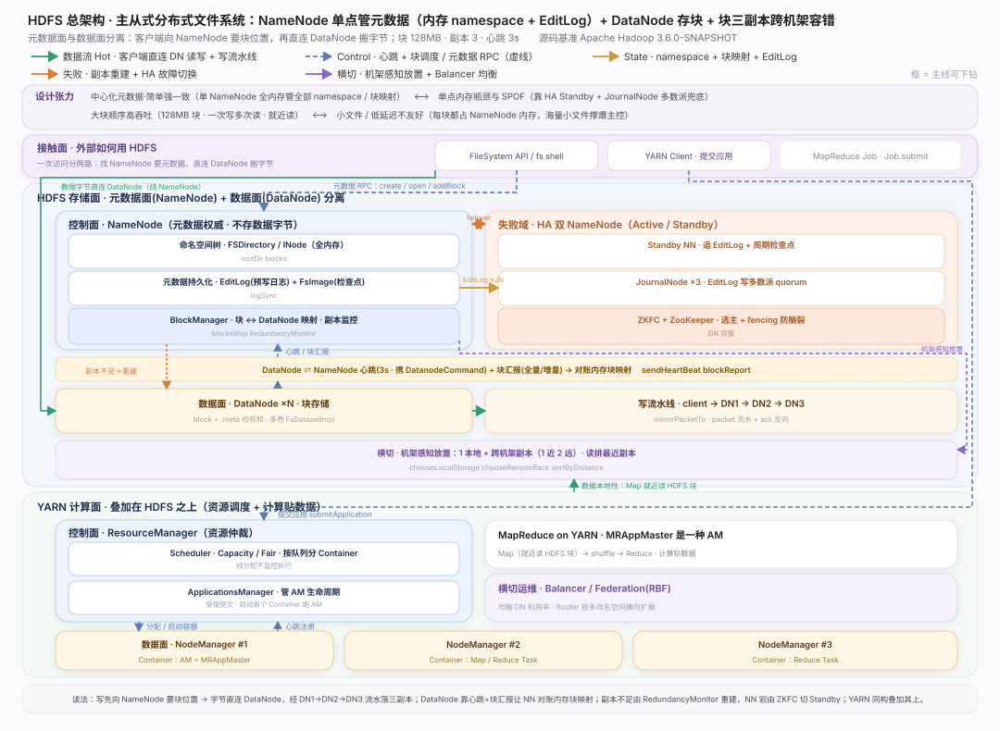
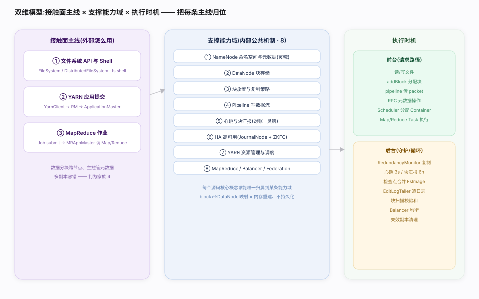
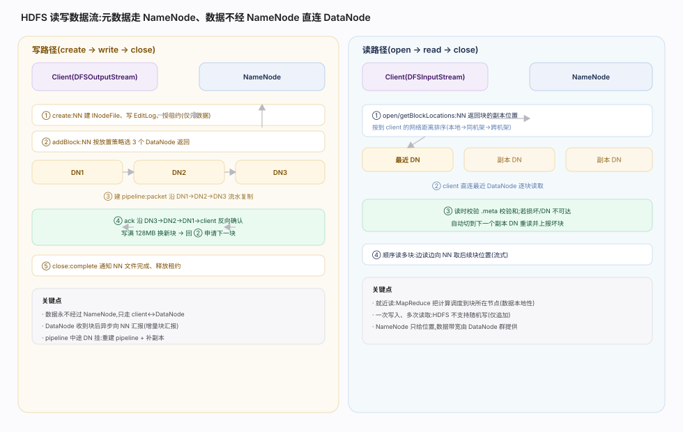
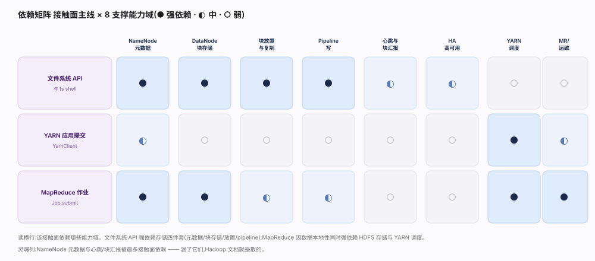
6f5d1374。net.topology.script/表未配时全集群视作一个机架，放置策略退化、跨机架容错失效。block→DataNode 位置不写盘，重启后靠块汇报重建（安全模式即等汇报到阈值）。| 贯穿声明 | 含义 | 源码落点 |
|---|---|---|
| 元数据与数据分离 | NameNode 只管命名空间元数据；数据字节永不经过 NameNode | FSNamesystem.java:389、DFSOutputStream.java:96 |
| 块映射内存重建 | block↔DataNode 映射不写盘，靠 DataNode 块汇报在内存 blocksMap 重建 | BlockManager.java:340（blocksMap）、:3278（processFirstBlockReport） |
| 期望态 vs 实际态对账 | NameNode 记「块应有几副本」，靠心跳+块汇报持续与 DataNode 实际态对账，欠则复制、多则删 | HeartbeatManager.java:441、BlockManager.java:5388（RedundancyMonitor） |
| 常量 | 默认值 | 源码 |
|---|---|---|
块大小 dfs.blocksize | 128 MB | HdfsClientConfigKeys.java:32 |
副本数 dfs.replication | 3 | HdfsClientConfigKeys.java:34 |
心跳间隔 dfs.heartbeat.interval | 3 秒 | DFSConfigKeys.java:1029 |
全量块汇报 dfs.blockreport.intervalMsec | 6 小时 | DFSConfigKeys.java:1116 |
检查点周期 dfs.namenode.checkpoint.period | 3600 秒 | DFSConfigKeys.java:257 |
检查点事务阈值 dfs.namenode.checkpoint.txns | 100 万 | DFSConfigKeys.java:259 |
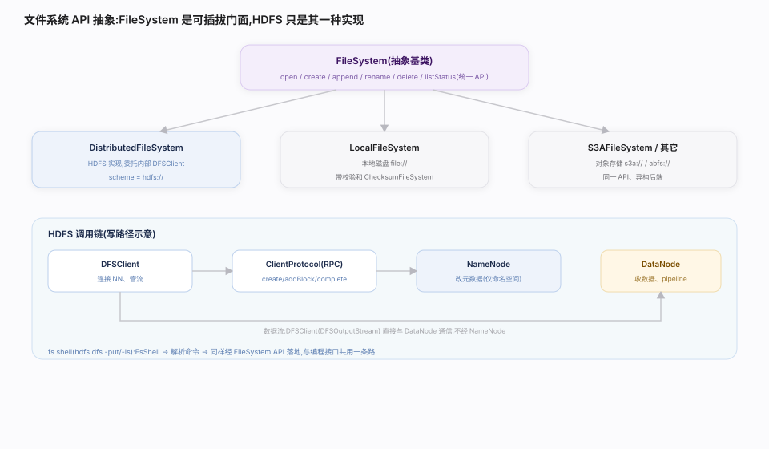
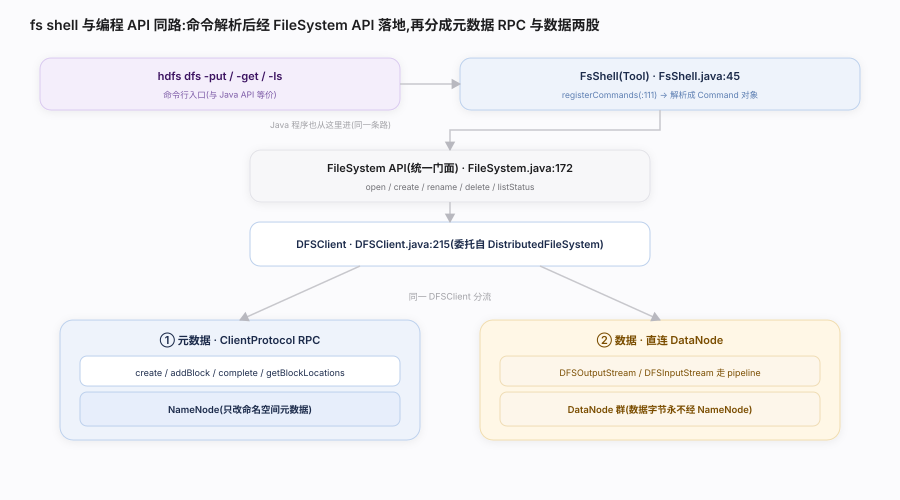
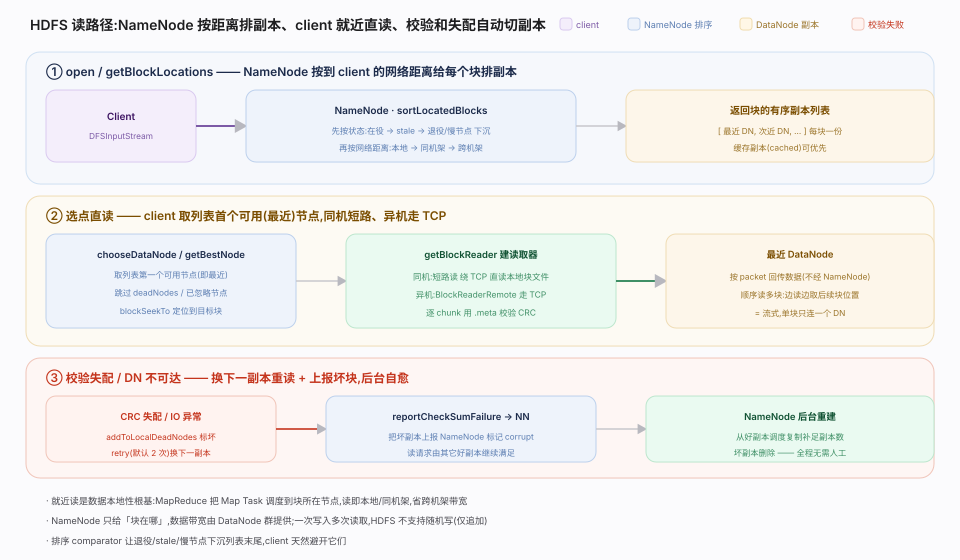
FileSystem 是一个可插拔抽象基类，HDFS 只是它的一种实现（DistributedFileSystem），本地盘、S3、ABFS 是另外的实现——同一套 open/create/append/rename/delete/listStatus API 屏蔽后端差异。hdfs dfs 命令行（FsShell）不过是这套 API 的一层 CLI 包装。上承用户程序与运维脚本，下启 NameNode 元数据操作与 DataNode 数据传输。FileSystem.get 有 CACHE，同 URI+conf 返回同一实例；频繁 newInstance 会泄漏连接。用完 close 或用带 disable-cache 配置隔离。-put 每次一次 RPC；用 -put 一个目录或 distcp 并行，减少 NameNode RPC 压力。dfs.client.read.shortcircuit，绕过 TCP 直接读本地块文件。hdfs dfs 与 Java API 完全同路，性能特征一致。hadoop fs 与 hdfs dfs 当不同能力：hadoop fs 面向任意 FileSystem，hdfs dfs 等价但语义限定 HDFS，二者底层同一 FsShell。| 环节 | 入口 | 源码 |
|---|---|---|
| 取块位置 | DFSClient.getLocatedBlocks | DFSClient.java:907 |
| 副本按状态+距离排序 | DatanodeManager.sortLocatedBlocks | DatanodeManager.java:574 |
| 选最近可用节点 | getBestNodeDNAddrPair | DFSInputStream.java:1077 |
| 短路/TCP 读 + CRC 校验 | getBlockReader | DFSInputStream.java:695 |
| 坏块换副本 + 上报 | readWithStrategy→reportCheckSumFailure | DFSInputStream.java:864/1592 |
| 实现类 | scheme | 后端 | 特点 |
|---|---|---|---|
| DistributedFileSystem | hdfs:// | HDFS 集群 | 委托 DFSClient；块+副本+pipeline |
| LocalFileSystem | file:// | 本地磁盘 | ChecksumFileSystem 带 .crc 校验 |
| S3AFileSystem | s3a:// | AWS S3 对象存储 | 无真正目录/rename 昂贵；最终一致语义 |
| AzureBlobFileSystem | abfs:// | Azure Data Lake | 同一 API、异构后端 |
| ViewFileSystem | viewfs:// | 挂载表 | 客户端挂载多命名空间（Federation） |
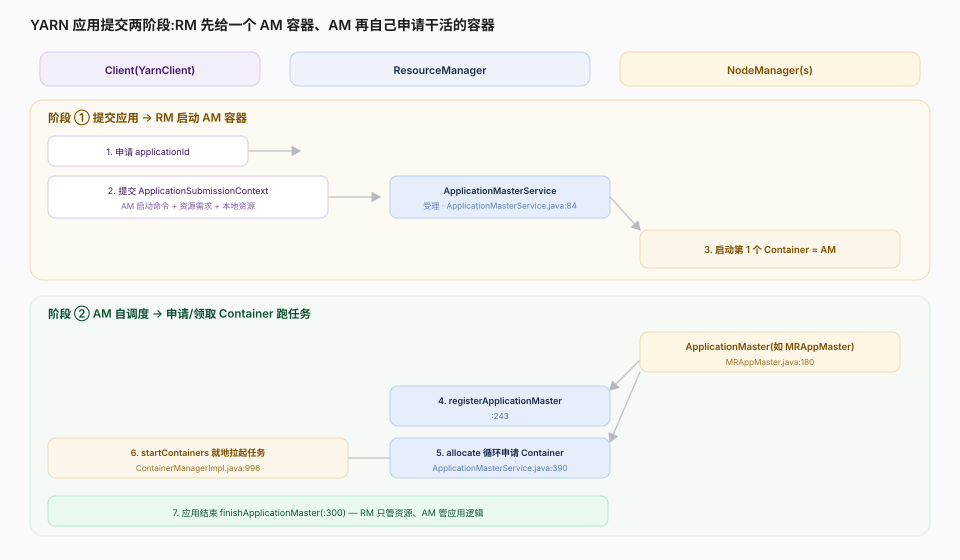
YarnClient 把一个「应用」提交给 ResourceManager，RM 先启动一个 ApplicationMaster（AM）容器，之后由 AM 自己向 RM 申请后续资源、由 NodeManager 就地拉起 Container 跑任务。YARN 把「集群资源仲裁」与「应用内部调度」解耦：RM 只管分配资源不管应用逻辑，AM 才懂业务。上承任意计算框架的提交请求，下启 YARN 资源调度与各框架的 AM。yarn.app.mapreduce.am.resource.mb 过小 AM 自身 OOM，过大挤占任务额度。public 可见性可跨应用复用，减少重复上传。yarn.resourcemanager.am.max-attempts，AM 挂了 RM 会重拉，但重试上限要匹配作业时长。| 阶段 | 入口 | 源码 |
|---|---|---|
| 领 appId | getNewApplication | ClientRMService.java:385 |
| 提交（幂等查 :634） | submitApplication | ClientRMService.java:580 |
| 建应用 | RMAppManager.submitApplication→createAndPopulateNewRMApp | RMAppManager.java:374/444 |
| 启 AM | AMLauncher.launch→startContainers | AMLauncher.java:111/130 |
| AM 注册 | registerApplicationMaster | ApplicationMasterService.java:243 |
| AM 申请（responseId 幂等 :422） | allocate | ApplicationMasterService.java:390 |
| 起任务 | ContainerManagerImpl.startContainers | ContainerManagerImpl.java:996 |
| 角色 | 管什么 | 不管什么 | 源码 |
|---|---|---|---|
| ResourceManager | 全集群资源仲裁、启动 AM、调度 Container | 应用内部任务编排 | ResourceManager.java:170 |
| ApplicationMaster | 本应用的任务切分、资源申请、失败重试 | 别的应用、物理资源池 | MRAppMaster.java:180（MR 的 AM） |
| NodeManager | 本节点资源上报、拉起/监控/杀 Container | 全局调度决策 | NodeManager.java:100 |
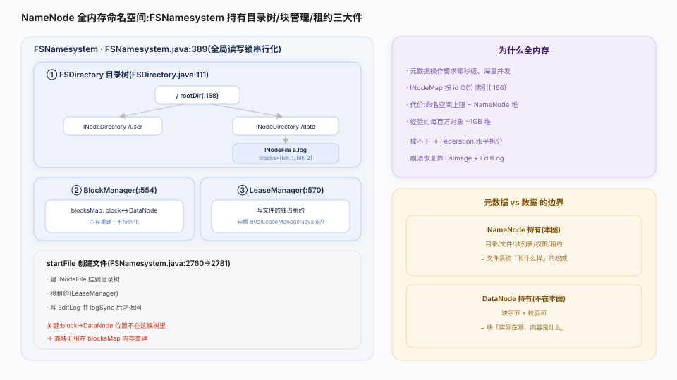
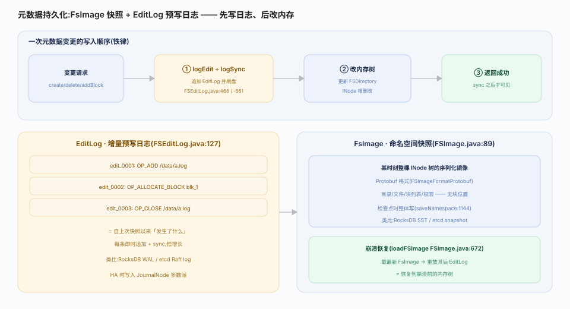
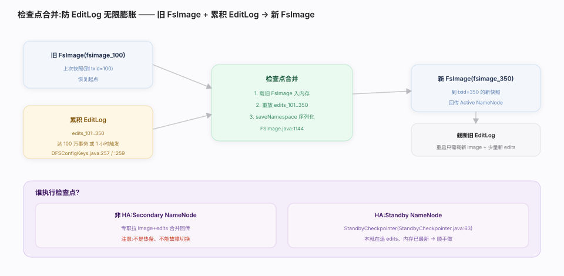
dfs.namenode.edits.dir 与 FsImage 目录分离，logSync 是写路径关键延迟点。block→DataNode 位置从不持久化，靠块汇报重建（重启进安全模式即等汇报）。| 维度 | FsImage | EditLog |
|---|---|---|
| 形态 | 整棵命名空间树的 Protobuf 快照 | 追加式操作日志（FSEditLogOp 序列） |
| 写入时机 | 检查点时整体写 | 每次元数据变更即时追加 + sync |
| 恢复角色 | 恢复起点（载入基线） | 在基线上重放到最新 |
| 类比 | RocksDB SST / etcd snapshot | RocksDB WAL / etcd Raft log |
| 源码 | FSImage.java:89 | FSEditLog.java:127 |
| 配置 | 默认值 | 源码 |
|---|---|---|
dfs.namenode.checkpoint.period | 3600 秒 | DFSConfigKeys.java:257 |
dfs.namenode.checkpoint.txns | 100 万事务 | DFSConfigKeys.java:259 |
| 租约软限制 | 60 秒（超时可被抢占续约） | LeaseManager.java:87 |
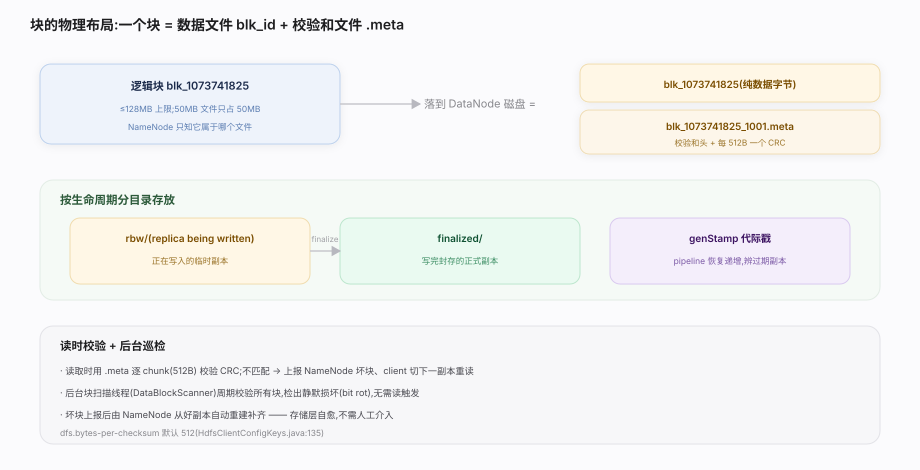
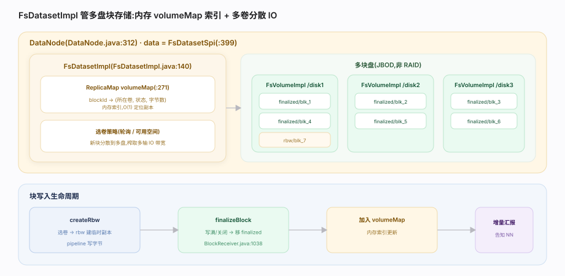
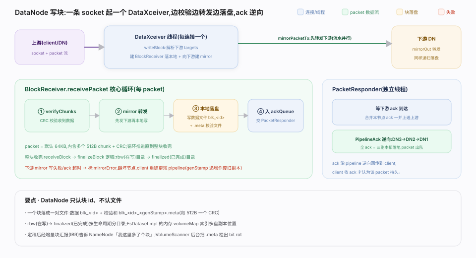
blk_<id> + 校验和文件 blk_<id>_<gs>.meta。上承 pipeline 写入的字节流，下启本地文件系统；被文件系统 API、pipeline 写、心跳块汇报强依赖。dfs.datanode.du.reserved 预留系统/临时空间，防写满磁盘。dfs.datanode.scan.period.hours（默认 3 周）过长则坏块发现慢，过短增 IO。| 机制 | 作用 | 源码 |
|---|---|---|
| block + .meta 双文件 | 数据与 CRC 校验和分离，读时逐 chunk 验 | dfs.bytes-per-checksum=512 |
| rbw / finalized 目录 | 区分在写副本与已完成副本 | BlockReceiver.java:986 |
| genStamp 代际戳 | 识别 pipeline 恢复后的过期副本 | BlockReceiver.java |
| ReplicaMap volumeMap | 内存 blockId→副本位置索引 | FsDatasetImpl.java:271 |
| 块扫描 | 后台校验和巡检检出 bit rot | DataBlockScanner |
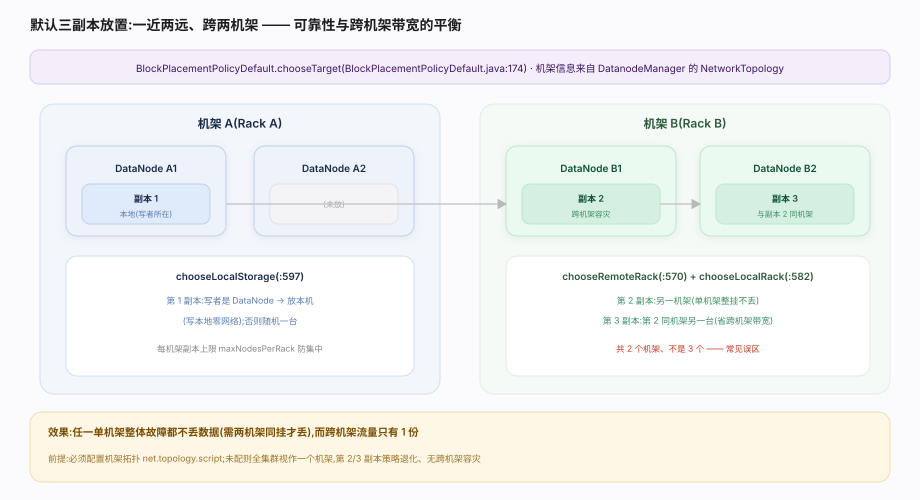
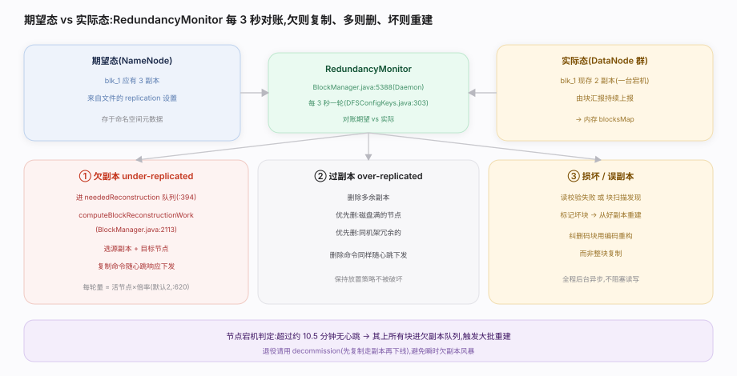
net.topology.script.file.name 或 table 映射；不配则全集群一个机架，第 2/3 副本策略退化、无跨机架容灾。replication.work.multiplier 加快重建，但会占 DataNode 带宽。| 副本序号 | 落点 | 目的 | 源码 |
|---|---|---|---|
| 第 1 | 本地节点（写者是 DN）或随机 | 写本地零网络 | chooseLocalStorage:597 |
| 第 2 | 另一机架 | 跨机架容灾 | chooseRemoteRack:570 |
| 第 3 | 第 2 副本同机架另一台 | 省跨机架带宽 | chooseLocalRack:582 |
| 更多 | 尽量分散、受 maxNodesPerRack 限 | 均衡 + 不过度集中 | chooseTarget:188 |
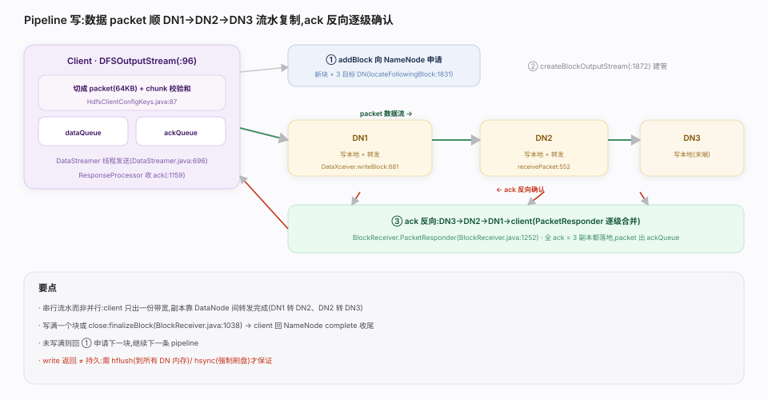
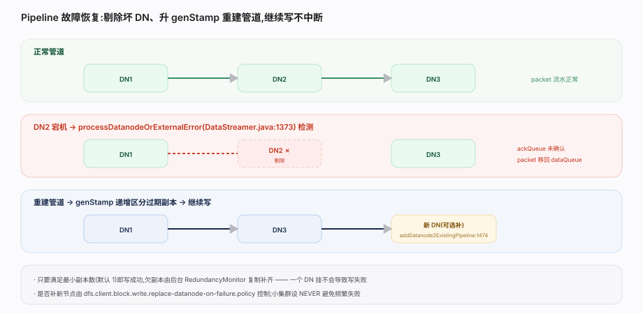
create/write，下启 DataNode 块存储；是「数据不经 NameNode」的具体落地。dfs.client-write-packet-size（默认 64KB）与队列深度影响吞吐与内存；高带宽网络可加大提升流水并行度。hflush 保证数据到达所有 DataNode 内存可被读到，hsync 强制刷盘；对可靠性敏感场景用 hsync，代价是延迟。dfs.client.block.write.replace-datanode-on-failure.policy 决定失败时是否补节点，小集群设 NEVER 避免频繁失败。| 层级 | 结构 | 作用 | 源码 |
|---|---|---|---|
| packet（64KB） | 多个 chunk + 校验和 | 流水最小传输单元 | DFSOutputStream.java:96 |
| dataQueue / ackQueue | 两个队列 | 发送中 / 待确认 | DataStreamer.java:119 |
| pipeline（DN1→DN2→DN3） | 串行转发链 | client 一份带宽复制三副本 | createBlockOutputStream:1872 |
| PacketResponder | 反向 ack 合并 | 逐级确认落地 | BlockReceiver.java:1252 |
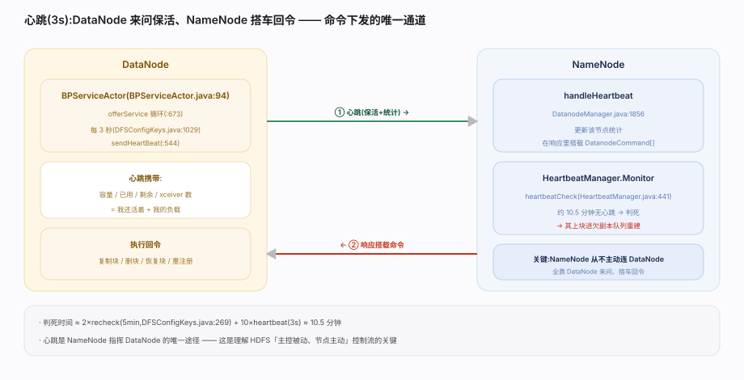
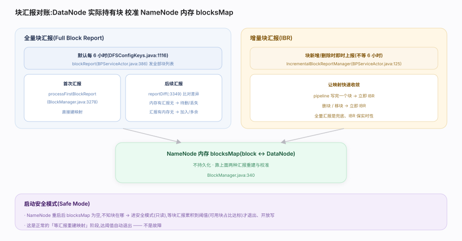
block↔DataNode 映射。这条主线回答了「块映射不持久化，那 NameNode 怎么知道块在哪」——答案就是块汇报重建。被块放置、HA 强依赖，是灵魂主线。dfs.blockreport.initialDelay 随机化首次汇报时刻。| 维度 | 心跳 | 块汇报 |
|---|---|---|
| 周期 | 3 秒 | 全量 6 小时 + 增量即时 |
| 内容 | 存活 + 容量统计 | 持有的块列表 |
| NameNode 动作 | 更新统计、搭车下发命令 | 校准 blocksMap 映射 |
| 缺失后果 | 10.5 分钟判死→块重建 | 映射陈旧、可能误判块位置 |
| 源码 | BPServiceActor.java:544 | BPServiceActor.java:386 |
| 配置 | 默认值 | 源码 |
|---|---|---|
dfs.heartbeat.interval | 3 秒 | DFSConfigKeys.java:1029 |
dfs.blockreport.intervalMsec | 6 小时 | DFSConfigKeys.java:1116 |
dfs.namenode.heartbeat.recheck-interval | 5 分钟 | DFSConfigKeys.java:269 |
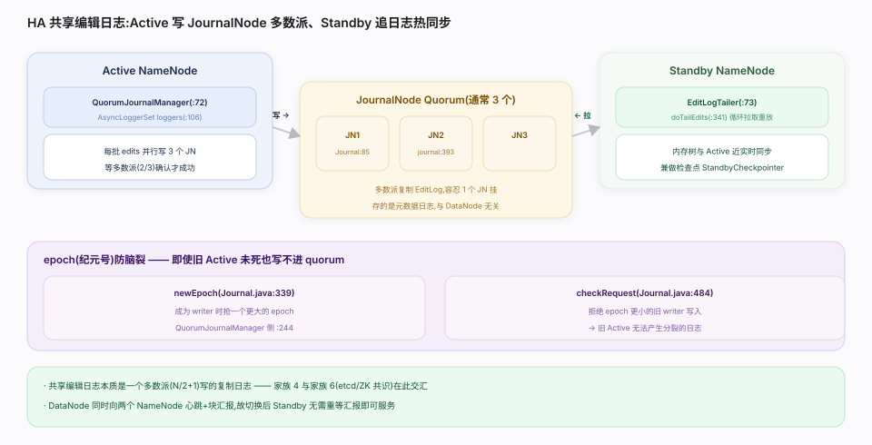
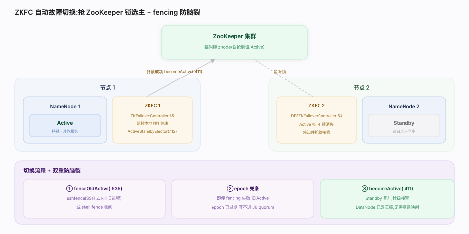
(N-1)/2 个故障；放在与 NameNode 不同的故障域。dfs.ha.tail-edits.period 决定 Standby 落后 Active 多久；切换后重放差量即可服务。| 组件 | 职责 | 防脑裂手段 | 源码 |
|---|---|---|---|
| JournalNode Quorum | 多数派复制 EditLog | epoch 递增，拒旧 writer | Journal.java:85 |
| Standby + EditLogTailer | 追日志保持热同步 + 检查点 | —— | EditLogTailer.java:341 |
| ZKFC + ZooKeeper | 健康监控 + 选主 + 触发切换 | fencing（sshfence/shell） | ZKFailoverController.java:411 |
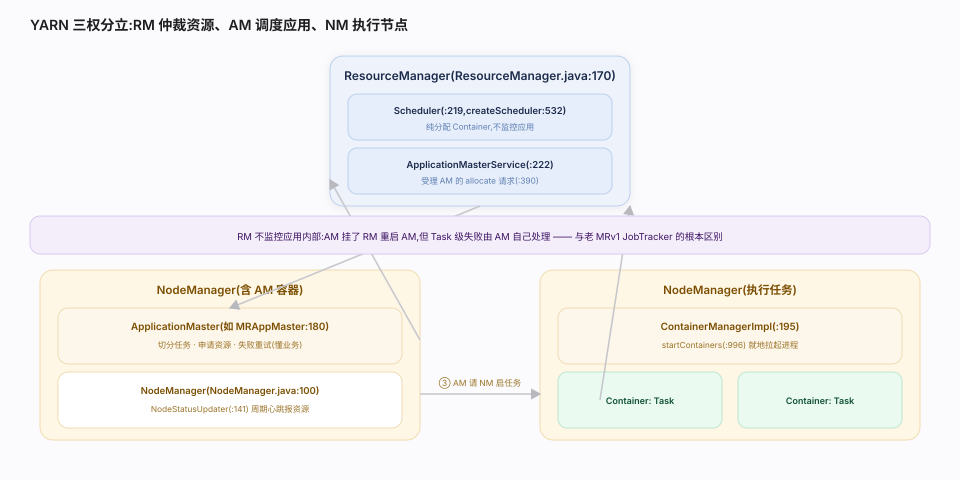
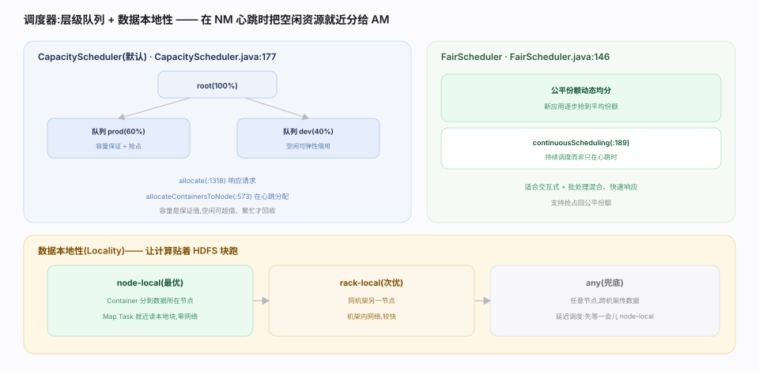
yarn.scheduler.minimum-allocation-mb 定最小分配单元；过大浪费、过小碎片多。yarn.scheduler.capacity.node-locality-delay）。yarn.nodemanager.resource.memory-mb/vcores 超配会 OOM、欠配会浪费。| 维度 | CapacityScheduler | FairScheduler |
|---|---|---|
| 分配模型 | 队列容量保证 + 弹性借用 | 公平份额动态均分 |
| 适合场景 | 多租户 SLA、容量隔离 | 交互式 + 批处理混合、快速响应 |
| 抢占 | 支持（回收超用） | 支持（抢回公平份额） |
| 默认 | 是（Hadoop 3.x） | 需显式配置 |
| 源码 | CapacityScheduler.java:177 | FairScheduler.java:146 |
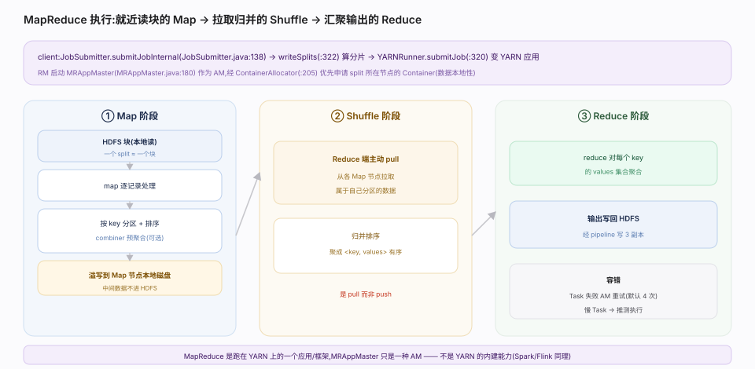
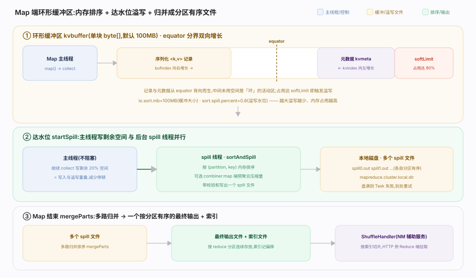
MRAppMaster 作为 AM 向 RM 申请 Container、把作业切成 Map/Reduce Task 调度执行；Map 阶段就近读 HDFS 块、Reduce 阶段经 shuffle 汇聚。它演示了接触面（YARN 提交）+ 存储（HDFS 本地性）+ 调度（YARN）三者如何协同。| 阶段 | 输入 | 处理 | 输出去向 |
|---|---|---|---|
| Map | HDFS 块（本地读） | map + 分区 + 排序 + 溢写 | Map 节点本地磁盘 |
| Shuffle | 各 Map 的分区数据 | 网络拉取 + 归并排序 | Reduce 节点内存/磁盘 |
| Reduce | 排序后的 <key, values> | reduce | HDFS（pipeline 写 3 副本） |
| 环节 | 关键点 | 源码 |
|---|---|---|
| 缓冲大小 | io.sort.mb 默认 100MB | MapTask.java:986 |
| 溢写水位 | sort.spill.percent 默认 0.8 | MapTask.java:985 |
| 触发溢写 | startSpill 唤醒后台线程 | MapTask.java:1601 |
| 排序+预聚合 | sortAndSpill + combinerRunner | MapTask.java:1616/1675 |
| 归并最终文件 | mergeParts 多路归并 | MapTask.java:1861 |
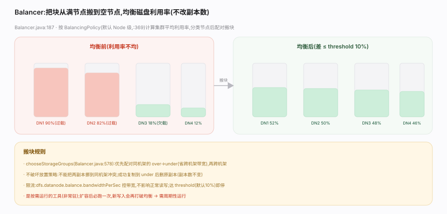
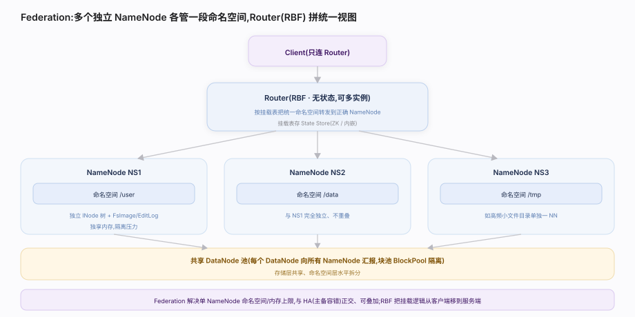
dfs.datanode.balance.bandwidthPerSec 与 dfs.balancer.max-size-to-move 控制影响面；扩容后必跑一次。| 环节 | 组件 | 源码 |
|---|---|---|
| RPC 入口（伪装 NameNode） | RouterRpcServer（实现 ClientProtocol） | RouterRpcServer.java:235 |
| 路径→namespace 解析 | MountTableResolver.getDestinationForPath | MountTableResolver.java:446 |
| 转发到目标 NN | RouterRpcClient | RouterRpcServer.java:259 |
| 挂载表/成员元数据 | State Store（ZK/内嵌） | MembershipStore.java |
| 能力 | Balancer | Federation/RBF |
|---|---|---|
| 解决什么 | DataNode 磁盘利用率不均 | 单 NameNode 命名空间/内存上限 |
| 改动对象 | 块的物理分布（不改副本数） | 命名空间水平拆分 |
| 形态 | 按需运行的工具 | 多 NameNode + Router 架构 |
| 关键约束 | 不破坏块放置策略 | 各 NN 独立、共享 DataNode |
| 源码 | Balancer.java:187 | ViewFs / RBF Router |